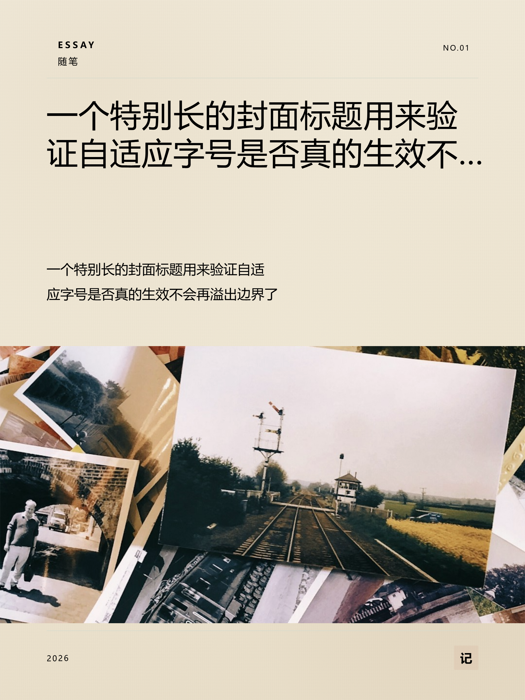

你的观察是对的——不是错觉，而且我有实测证据。这份报告把"为什么对不上"拆开，再把网络上的同类做法、可用的开源方案、以及我建议的落地顺序列清楚。
一句话结论：问题不在"配色/排版"，而在配图从哪来。当前默认走的是 Wikimedia Commons（百科图库）， 它偏地理/历史/艺术品，天生不适合做生活方式类封面；搜不到时还会兜底到"本地随机库存图"，于是出现"讲收纳、配一张铁路照"这种对不上的结果。
而你项目自己的设计文档早就写明了正确做法（references/SKILL.md：中文场景优先用 Pexels，它原生支持中文搜索）——实现和设计文档脱节了。

bg_source = local（联网搜图没命中，回退了本地库存图），署名如实写明"联网没找到合适的底图，已用本地底图"。| 根因 | 具体表现 | 证据 |
|---|---|---|
| ① 图源选错了 | 默认走 Wikimedia Commons（免 key）。它是百科/地理/艺术品图库，不是生活方式图库，搜"收纳/治愈/通勤"这类词基本对不上。 | 第三方实测对比：Wikimedia「良莠不齐、中文搜索质量不如英文、逐张授权不同」；Pexels「生活化场景化、原生支持中文 locale=zh-CN」。项目 references/SKILL.md 也写了「中文或国内场景优先用 Pexels」。 |
| ② 关键词太弱 | 关键词提取是本地 50 词词典（core/image_search.py::TOPIC_MAP）。命中就查英文词，不命中就把中文整句丢给英文图库——必然搜不到。 |
代码：extract_query() 兜底分支是"清洗标题前 24 字"直接当 query。 |
| ③ 兜底"瞎配" | 搜不到时不空着，而是取本地库存图的第一张——于是配图与文案无关，比"没有图"更尴尬。 | 代码：_local_fallback() 返回 public/images/ 下第一张图。 |
| 图库 | 免费额度 | 中文搜索 | 调性 | 适合本项目？ |
|---|---|---|---|---|
| Pexels | 200 次/小时 | 原生支持（locale=zh-CN） | 生活化、场景化、人物/家居丰富 | 最合适 |
| Unsplash | 50 次/小时（生产 5000） | 一般，推荐英文 | 艺术、极简、风景、设计感 | 次选（英文关键词） |
| Wikimedia Commons | 无限（免 key） | 支持但质量差 | 百科：地理/历史/艺术品 | 只该做最后兜底 |
| Pixabay | 5000 次/天 | 一般 | 综合 | 可作补充 |
出处：免费图库API全攻略（含 Wikimedia 中文质量实测）、Best Free Image APIs 2026、项目内 references/SKILL.md。
成熟做法是给"图 + 文"算一个匹配分（CLIP 余弦相似度 / CLIPScore），从中挑分最高的图。分档参考：0.15 以下=基本不相关，0.15–0.30=中等，0.30–0.45=强相关。
出处：CLIP 图文对齐打分实践、EvalScope 的 CLIPScore/VQAScore 指标说明。中文场景可用开源的 Chinese-CLIP（阿里 OFA-Sys）。
多家小红书封面攻略都指向同一结论："大字封面/纯文字封面"是最容易出爆款、最容易复制的形态——不需要摄影、不需要修图，靠排版张力传递信息；知识类、干货类笔记十有八九都是这个路子。配色克制（≤2 色）、字号三层对比（主标题 60–80pt）即可。
出处：小红书大字封面 4 个公式、封面设计要点（"纯文字封面"）、纯文字封面极简制作法。
先澄清一件事："归藏"在本项目里是你自己的设计体系命名（core/guizang_renderer.py + public/cover-templates/ 那 10 套 editorial/swiss 模板，配套文档在 references/），不是一个外部开源项目——所以不存在"上游有没有更新"。
但这次翻文档有个有价值的发现：references/SKILL.md 里其实已经写清了正确的图片来源策略（Unsplash / Pexels / Flickr CC / Wallhaven 四个源，且明确"中文场景优先 Pexels"），PRODUCT.md 还专门立了"决策 3：文案太长要告知用户而不是硬塞""决策 4：图片先取后说、让用户决定"。
也就是说：设计意图是对的，但代码只实现了 Wikimedia + Pexels(需 key)，把最关键的"中文优先 Pexels"落空了。
| 优先 | 做什么 | 为什么有效 | 量 |
|---|---|---|---|
| A1 | 把默认图源换成 Pexels（中文用 locale=zh-CN），Wikimedia 降为最后兜底 | 直接命中"中文生活方式配图"这个场景，是当前错配的最大来源 | 小（需一个免费 key） |
| A2 | 关键词改用 LLM 提取（你已有 AI 配置，失败自动降级本地词典） | 把"整句中文丢给英文库"换成 2–3 个精准英文检索词 | 小 |
| A3 | 搜不到就别硬配：改提示"没找到合适的图"，并给「换一张 / 改用无底图版式 / 上传自己的图」三个出口 | 杜绝"讲收纳配铁路照"的尴尬（也符合你项目"不静默、不硬塞"的铁律） | 小 |
image_gen）：相关性最高，代价是成本与"AI 味"。我的推荐顺序：A1 + A2 + A3（先止血，当天可上线）→ 看效果 → 若还不够就做 B1（打分选优）或直接推 C1。
个人判断：C1 对你这个工具最划算——你不需要照片也能出好看的封面，而"不依赖照片"等于把"图文不符"这个问题从根上删掉，还顺带解决"生成要等 25 秒"。
core/image_search.py、references/SKILL.md、references/PRODUCT.md）+ 实测截图（docs/ux-audit/shots/after/fit-sp-mist.png）+ 上述公开资料。
本轮只做调研与建议，未改动代码。